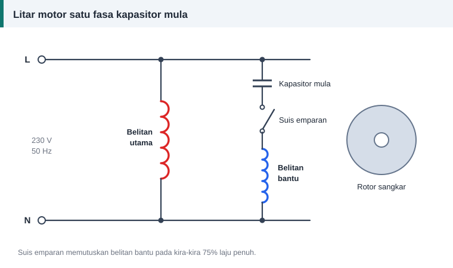

Motor satu fasa
Motor Satu Fasa: Belitan Utama dan Belitan Bantu
Bekalan satu fasa menghasilkan medan yang berdenyut, bukan berpusing. Medan berdenyut boleh mengekalkan pusingan rotor yang sudah bergerak, tetapi tidak boleh memulakannya, kerana rotor yang diam ditarik sama kuat ke dua-dua arah.
Ia umpama menekan pedal basikal lurus ke bawah ketika engkol berada tegak. Daya ada, tetapi tiada pusingan sehingga ada tolakan dari sisi.


Mengapa perlu dua belitan
Belitan bantu diletakkan 90 darjah elektrik dari belitan utama dan diberi arus yang berbeza fasa. Dua medan berdenyut yang berbeza dari segi ruang dan masa bergabung menjadi medan berpusing. Itulah tolakan dari sisi.
Belitan utama
- Dawainya lebih tebal dan ia kekal dalam litar sepanjang masa.
- Ia dimasukkan dahulu, jadi terletak di dasar alur.
- Ia menduduki sebahagian besar alur, lazimnya kira-kira dua pertiga.
Belitan bantu
- Dalam motor fasa belah dan kapasitor mula, dawainya lebih halus kerana ia hanya bekerja beberapa saat.
- Dalam motor kapasitor jalan, ia direka untuk bekerja berterusan dan saiznya lebih hampir kepada belitan utama.
- Ia terletak di atas belitan utama di dalam alur yang dikongsi.
Cara anjakan fasa dihasilkan
- Fasa belah: belitan bantu berintangan tinggi tanpa kapasitor. Tork mula sederhana.
- Kapasitor mula: kapasitor elektrolit bersiri dengan belitan bantu. Tork mula tinggi, sesuai untuk pemampat dan pam.
- Kapasitor jalan: kapasitor filem kekal dalam litar dan tiada suis. Senyap dan cekap, biasa pada kipas.
- Kapasitor mula dan jalan: gabungan kedua-duanya untuk tork mula yang tinggi dan larian yang cekap.
Perbezaan dua jenis kapasitor dihuraikan dalam kapasitor mula dan kapasitor jalan.
Suis emparan
Suis ini dipasang pada aci. Apabila laju mencapai kira-kira 75% daripada laju penuh, pemberatnya melayang keluar dan membuka sesentuh, lalu memutuskan belitan bantu atau kapasitor mula.
Jika suis gagal terbuka, belitan bantu atau kapasitor mula terbakar dalam masa singkat. Jika suis gagal tertutup, motor hanya berdengung dan tidak mula.
Belitan sepusat bersinus
Kebanyakan motor satu fasa menggunakan gegelung sepusat dengan bilangan lilitan yang berbeza bagi setiap gegelung: gegelung luar paling banyak dan gegelung dalam paling sedikit. Agihan itu menghasilkan medan yang hampir sinus.
Apabila merekod data, kira lilitan setiap gegelung secara berasingan. Jangan anggap semuanya sama.
Menukar arah pusingan
Terbalikkan sambungan salah satu belitan, sama ada utama atau bantu, tetapi bukan kedua-duanya.
Nota tentang kalkulator
Tab "Belitan 3 fasa" pada kalkulator direka untuk stator tiga fasa. Untuk motor satu fasa, salin data asal bagi setiap gegelung. Tab "Dawai setara", "Tukar voltan" dan "Panjang dan berat" sah untuk semua jenis belitan.
Rujukan dan bacaan lanjut
Artikel berkaitan
Kapasitor Mula dan Kapasitor Jalan: Perbezaan, Nilai dan Cara Menguji
Kapasitor mula memberi tork permulaan, kapasitor jalan kekal bekerja sepanjang masa. Ketahui perbezaan binaan, kadaran, tanda kerosakan dan cara menggantinya dengan selamat.
Melilit Semula Kipas Siling: Panduan untuk Pemula
Kipas siling ialah projek lilitan semula pertama yang popular. Fahami binaan stator dalamnya, belitan utama dan bantu, kapasitor serta langkah kerja sebelum membuka kipas anda.
Mengapa Belitan Motor Terbakar: Lapan Punca dan Cara Mengenalnya
Belitan yang hangus menyimpan petunjuk tentang puncanya. Baca corak kerosakan untuk membezakan beban lampau, hilang fasa dan litar pintas supaya motor tidak terbakar semula.